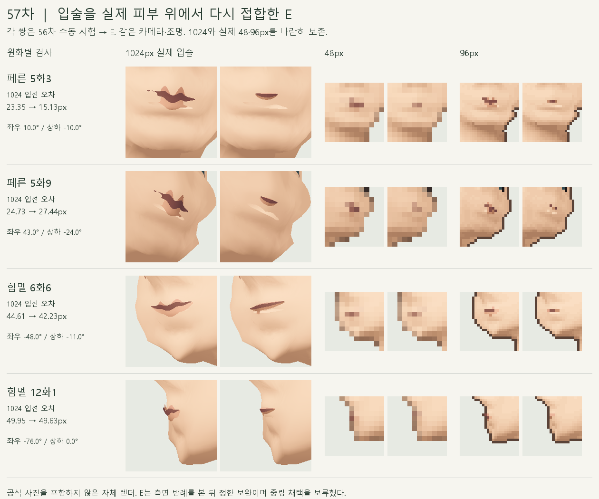
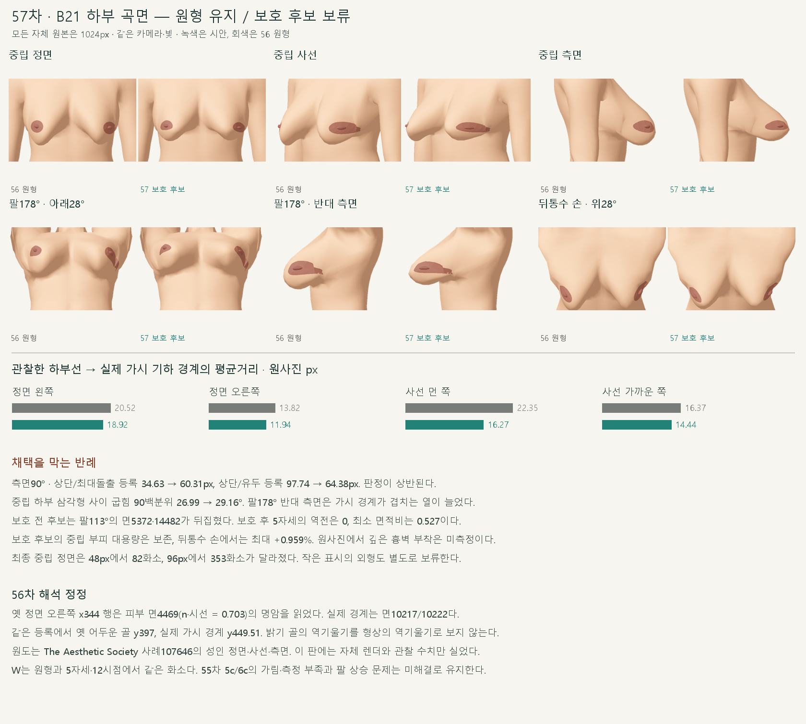
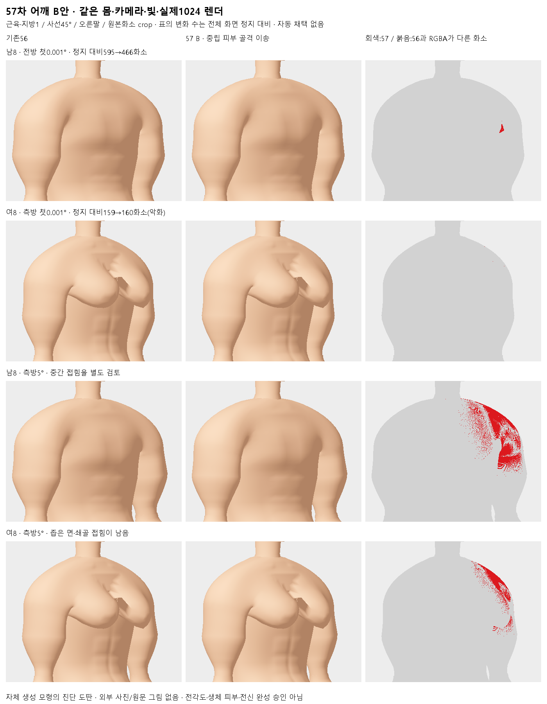
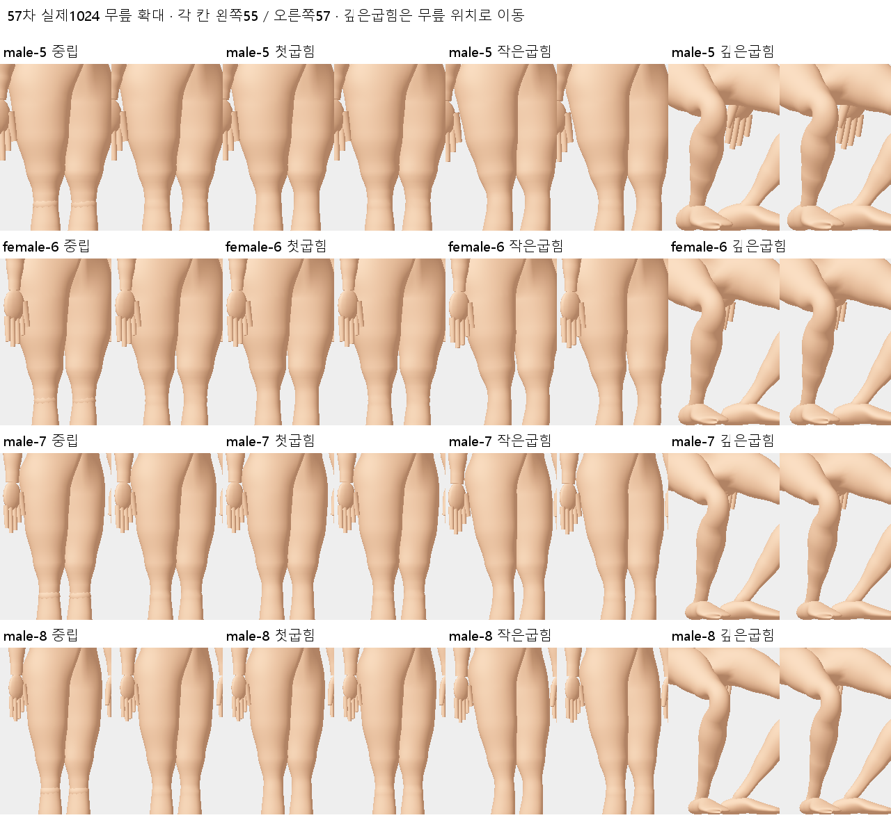

입술이 검게 갈라지는 부분을 같은 피부 위에서 교정
페른은 56차 표정과 턱을 그대로 두고 입술 면의 접합을 고쳤다. 힘멜은 55차 귀 앞 피부에 미소 0.35를 적용한 입력에서 같은 작업을 했다. 화면의 ‘비교 기준’, ‘입술 접합’, ‘49차 중립 기준’을 따로 고를 수 있다. 눈·코·머리 전체를 다른 판으로 바꿔 얻은 차이를 입술 수정의 성과로 세지 않았다.
페른 5화 3번 장면의 보이는 입선 오차는 1024px에서 23.35→15.13px로 줄었지만 5화 9번에서는 24.73→27.44px로 늘었다. 정면의 검은 갈라짐을 줄여도 흰 아랫입술이 떨어져 보이고 측면에서는 납작한 면이 남는다. 교정 도중 다른 장면의 반례도 본 뒤 최종안을 만들었으므로 이 판에는 독립 검증을 통과했다는 표현을 쓰지 않는다.

명암선과 외곽선을 구별하고 B21의 밑면을 다시 맞대기
측정 정정: 56차에서 B21 바깥 밑선의 방향이라고 설명한 일부 점은 실제 실루엣이 아닌 앞쪽 피부의 어두운 부분이었다. 이전 기록은 보존하고 이 해석을 정정한다. 원도에 대응하는 외곽, 같은 피부점, 빛 때문에 생긴 선은 서로 다른 측정으로 다룬다.
B21은 앞쪽으로 과하게 모인 하부와 중앙의 뾰족한 부분을 분리해 고쳤다. 체적과 표식 위치를 보호한 후보에서 정면 좌·우 외곽선 오차는 20.52→18.92px·13.82→11.94px, 사선은 22.35→16.27px·16.37→14.44px로 줄었다. 그러나 측면을 최대 돌출점으로 등록한 비교에서는 34.63→60.31px로 멀어졌다. 등록점을 다르게 골라 좋은 결과만 채택하지 않는다.
팔을 든 다섯 자세의 면 역전은 0개였지만 중립에서 삼각면 사이 굽힘의 90백분위는 26.99→29.16°로 커졌다. 이 후보는 수동 비교로 남기고 기본형 W와 B21의 현행판은 유지한다. 면이 뒤집히지 않았다는 수치만으로 자연스러운 가슴이라고 판정하지 않는다.
W는 피부 형상을 바꾸지 않았다. 작업대의 기본 표식은 ‘피부에 다시 밀착’이며, 원 연구 대조군은 ‘기존 부착’을 사용했다. 원 연구의 표식까지 같은 그림을 보려면 ‘기존 부착’을 선택한다. 표식 설정의 차이를 가슴 형태 개선으로 세지 않는다.

팔을 처음 움직일 때 피부가 갑자기 바뀌는 현상
중립 피부에 골격 움직임을 함께 적용한 다음 기존 거상 표면으로 이어지는 시안을 만들었다. 남녀 2~8등신과 세 체성분, 네 방향 조합 168조건에서 첫 0.00001°의 최대 피부점 이동은 머리 높이 기준 0.0127892→0.0000001294였다. 원래 차이가 매우 작던 71조건에서는 오히려 조금 늘었다.
중간 각도 1,176조건 중 새 급접힘 수가 늘어난 경우가 150개다. 실제 1024px에서 남성 8등신의 첫 0.001° 변화 화소는 595→466개였지만 여성의 한 조건은 159→160개로 늘었다. 겨드랑이와 쇄골 근처의 주름도 남는다. 시작 순간의 연속성과 자세 전체의 아름다움을 따로 판단한다.

0.001° 단위 입력, 작은 각도 단추, 원형 다이얼과 0→10→0° 재생을 화면 옆에 배치했다. 조작을 한 번 마칠 때 실행 취소 한 번으로 돌아가며, 다른 모델이나 도구로 옮기면 재생이 멈춘다.
무릎의 정지 면과 굽힘 면을 같은 격자로 유지
정지 때 사용하던 면을 첫 굽힘에 다른 면으로 교체하던 과정을 바꿨다. 55차에서 검토한 네 기본형(남성 5·7·8등신, 여성 6등신)의 무릎 띠를 정지 상태에서도 유지하고 실제 중립 피부에 맞췄다. 허벅지·종아리 경계와 관절 위치는 함께 연결한다.
네 기본형·다섯 체성분·다섯 자세·열 방향·세 해상도의 3,000쌍을 비교했다. 첫 굽힘 1024px의 채널 차 8 이상인 화소 합계는 84,386→1,338개로 줄었다. 48px에서는 두 조건이 기존 0화소에서 1화소로 늘었다. 중립 실루엣이 최대 26화소 바뀌므로 원래 체형을 완벽하게 보존했다고 주장하지 않는다. 얕은 굽힘과 깊은 굽힘 1,200쌍은 55차와 실제 RGBA가 같았다.

채택 범위와 다음 교정
| 대상 | 이번에 확인한 것 | 다음에 고칠 것 |
|---|---|---|
| 얼굴 | 입술만 고친 후보와 정확한 이전 입력 비교 | 떠 보이는 아랫입술, 측면 두께, 원화 장면마다 달라지는 표정 |
| 성인 가슴 | 실제 외곽과 명암선의 구별, 앞·사선 밑면 개선 | 측면 등록과 돌출, 중립 면 굽힘, 팔 자세에서 자연스러운 흉벽 연결 |
| 어깨 | 중립→첫 거상의 피부 연속성 | 중간 각도의 접힘과 눌림, 쇄골·겨드랑이 전체 표면 |
| 무릎 | 같은 격자 유지와 복원, 첫 굽힘의 튐 감소 | 남은 열 기본형, 중립 실루엣 변화, 실제 피부 주름·접촉 |
각 후보는 실제 모델에서 직접 고르고 기존판과 대조할 수 있다. 얼굴·가슴 자체의 보강 30%, 리깅·표면 변형·연속 움직임의 기초 70%를 회차 목표로 유지했다. 병렬 담당자 전체의 동일 기준 실투입 시간을 계측하지 못했으므로 정확한 시간 비율을 달성했다는 주장은 하지 않는다. 게임 본개발이나 판매 가능한 품질의 완성으로 처리하지 않는다.
이번 전후 측정은 457행이다. 같은 모형의 시점·자세를 바꾼 관찰이므로 독립된 사람 457명의 자료가 아니다. 잘못 대응시킨 56차 B21 밝기 측정 한 행은 원래 수치와 설명을 남기고 현재 학습에서 제외했다. 새 학습은 정정 사실을 포함하는 별도 판으로 남기며 이전 모델과 일지는 보존한다. 후보를 바꾼 뒤 되돌렸을 때 표식이 달라지는 문제도 찾아 후보별 캐시를 분리했다.